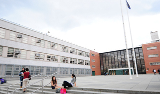
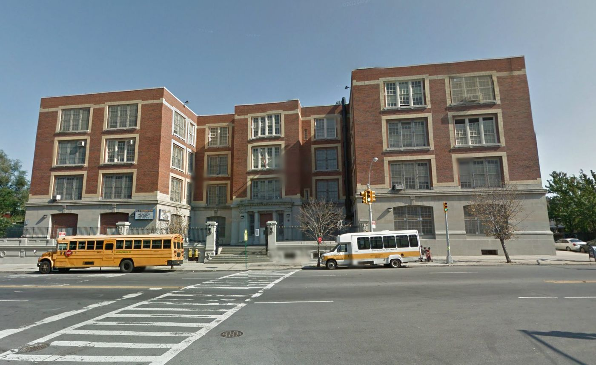
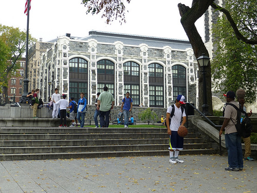
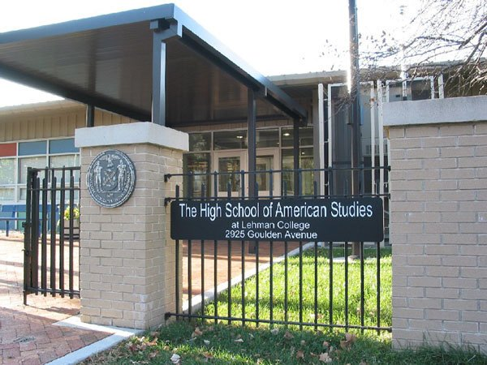
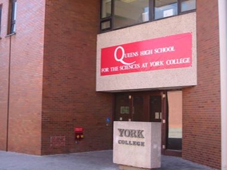
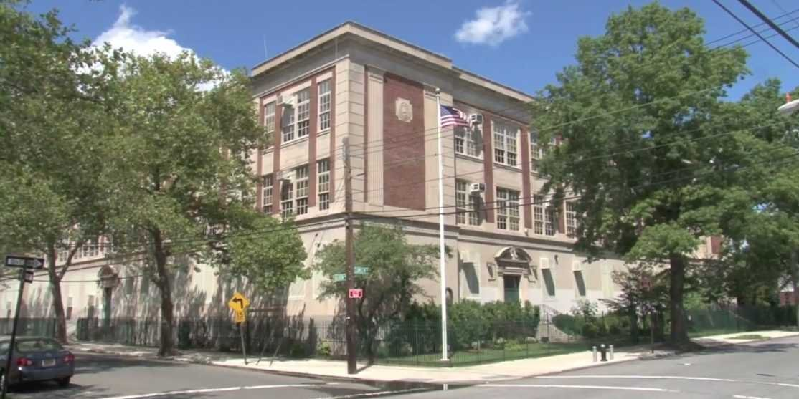
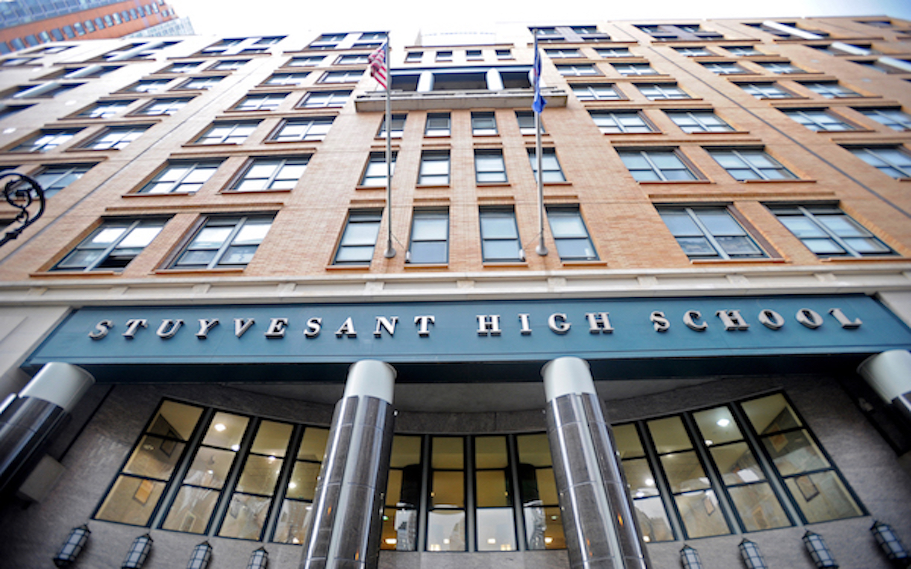

There are eight specialized high schools in New York City that require the test for admission. They are:
The Bronx High School of Science
Founded in 1938, The Bronx High School of Science is located on Creston Avenue and 184th St. The school's alumni include eight Nobel prize winners, six Pulitzer prizes for journalism, and more than 200 Regeneron Science Talent Search Scholars. A student's SHSAT score will be used to determine admission.
 Source{kind=link}
Brooklyn Latin School
Based on Boston's premiere public school, Boston Latin, Brooklyn Latin aims to prepare its students' foundations in a liberal arts curriculum, with an emphasis on math, science, English, history, Latin, a modern world language, and art history. A student's SHSAT score will be used to determine admission.
 Source{kind=link}
Brooklyn Technical High School
Brooklyn's revered specialized high school, Brooklyn Technical provides students with a passion for learning an environment to thrive. Through early introduction to research and interdisciplinary education in mathematics, science, engineering, computer science and the liberal arts, Brooklyn Tech prepares students for the modern world. A student's SHSAT score will be used to determine admission.
 Source
Source
{kind=link}
High School for Math, Science and Engineering at City College
The High School for Math, Science and Engineering (HSMSE) at The City College of New York challenges academically-driven students to use inquiry, critical thinking, and problem solving to improve their skills in math, science, engineering, and civic responsibility. A student's SHSAT score will be used to determine admission.
 Source{kind=link}
High School of American Studies at Lehman College
The High School of American Studies at Lehman College emphasizes the understanding of American history as a foundation for learning and careers in politics, law, journalism, business, mathematics, and policy. Students are prepared to apply to top colleges and universities through a rounded curriculum that finds its framework in key events of American History. A student's SHSAT score will be used to determine admission.  Source
{kind=link}
Queens High School for the Sciences at York College
Queens High School for the Sciences at York College (QHSSYC) collaborates with York College/CUNY to bring academically-promising students in New York the best education. Founded in 2002, QHSSYC has been named one of the top 100 schools and ranked #3 in New York State. Students at QHSSYC receive a well-rounded education with an emphasis on the technical skills they need to pursue careers in mathematics, science, medicine, and engineering. A student's SHSAT score will be used to determine admission.
 Source{kind=link}
Staten Island Technical High School
The Staten Island Technical High School's advanced curriculum is designed to prepare students for admission in top universities and colleges. With a strong emphasis on academics, SITHS enriches a student's curiosity, character, scholarship, and leadership, while encouraging students to explore and innovate. With the skills students acquire at SITHS, they will succeed in their pursuits in and beyond college and become responsible citizens of tomorrow. A student's SHSAT score will be used to determine admission.
 SourceStuyvesant High School
With a century-long legacy of excellence, Stuyvesant High School's curriculum encourages students to further their interests in Science, Mathematics and Technology. As students strengthen the skills they need to succeed in higher education and beyond, they also develop the intellectual and humanistic values that make them better citizens. Notable alumni include four Nobel Laureates,and leaders in science, mathematics, government, law, the arts, and music. A student's SHSAT score will be used to determine admission.
 Source{kind=link}
{kind=link}
{kind=link}